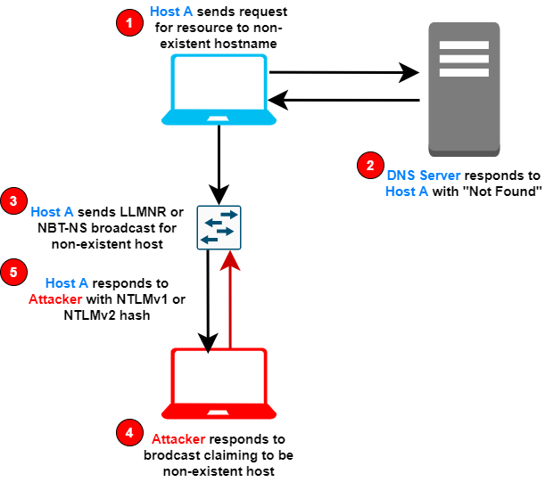

LLMNR & NetBIOS NS Spoofing/Poisoning (mispelled share queries)
Terms that you need know before continue
•
Link-Local Multicast Name Resolution (LLMNR)
From Windows 2000 if name
resolution fails with DNS (a hostname lookup can fail for a number of reasons, such as mistyping a hostname,
misconfigurations, or decommissioned DNS records), it will use the Link-Local Multicast Name Resolution (LLMNR)
protocol to ask neighbouring computers. LLMNR can be used to resolve both IPv4 and IPv6 addresses.
•
NetBios Name Service(NBT-NS/NBNS)
From Windows Vista if name resolution fails both with LLMNR
and DNS, NetBios Name Service (NBT-NS) will be used. NBT-NS is a similar protocol to LLMNR that serves the same
purpose. The main difference between the two is NBT-NS works over IPv4 only.
•
New Technology LAN
Manager (NTLM)
The NTLM protocol is an authentication protocol used in Microsoft environments. In
particular, it allows a user to prove who he is to a server in order to use a service offered by this server. NTLM
is the successor to the authentication protocol in Microsoft LAN Manager (LANMAN)
Spoofing LLMNR and NBNS
On these occasions when LLMNR or NBT-NS are used to resolve a name resolution request, any host on
the network who knows the IP of the host being asked about can reply.
Even if a host replies to one of these
requests with incorrect information, it will still be regarded as legitimate.
If the IP of the host being asked
about, belongs to a resource that requires identification/authentication, the username and
NT
Hash will then be sent to the Man-in-the-Middle(attacker). After collected the hashes the attacker can crack
them offline to obtain the plaintext passwords.
A typical scenario
of attacking LLMNR or NBT-NS broadcasts1. Host A requests an SMB share at the system
“\\fileshare\files”, but instead of typing “fileshare” mistakenly types “fileshar”.
2. DNS Server can't
resolve “fileshar” as it is an unknown host
3. Host A then send a LLMNR or NBT-NS broadcast message asking to
the LAN(local network) for the IP address for host “fileshar”
4. The Attacker responds to this broadcast
message claiming to be the “fileshar” system.
5. Host A complies, and sends to the Attacker their username and
NTLMv1 or v2 hash to the attacker.
Solution to this
Vulnerability:https://www.4armed.com/blog/llmnr-nbtns-poisoning-using-responder/Bibliographyhttps://www.4armed.com/blog/llmnr-nbtns-poisoning-using-responder/https://www.notsosecure.com/pwning-with-responder-a-pentesters-guide/
{kind=link}